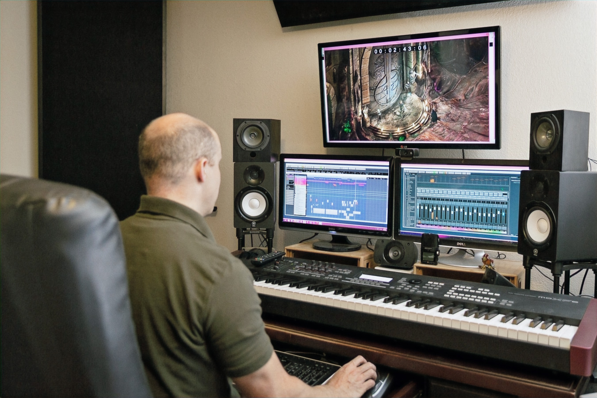
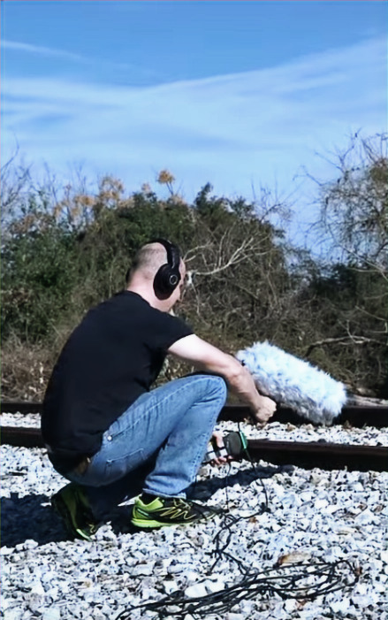

Bring Funky Rustic in where the audio needs to land.
Concepting, direction, music, sound, voice over, integration, and production support built for fast iteration and a more distinctive sonic identity.

Concepting
Start with the goals.
Define genre, emotion, interaction, and what will truly make the game's audio stand out before production gets locked into default answers.
- What the player should feel
- Which ideas are actually worth emphasizing
- How audio and integration should support them

Direction
Leadership for music, sound, and voice.
Bring in senior audio direction for internal teams, semi-embedded support, or fully external leadership that keeps audio aligned with the rest of the team.
- Creative cohesion without overshadowing other disciplines
- Priority setting and regular communication
- Leadership from concept through delivery

Music
Composition, sourcing, supervision, and mastering.
Discuss genre, usage, and intent, then shape the score toward something more unique than a stock orchestral answer when the project allows.
- Original themes, songs, and score
- Licensing, sourcing, and library search
- Supervision, cueing, and mastering

Sound
Design, mixing, foley, and field recording.
Build sound that gives mechanics weight, environments character, and interactions a strong identity without leaning on custom recording just for its own sake.
- Sound design for systems and worlds
- Mixing for live interactive environments
- Custom foley and field recording when they serve the concept

Voice Over
Casting, sessions, direction, and vocal design.
Find the right voices, guide the sessions, and shape performances that fit character, tone, budget, and long-term production needs.
- Voice over and casting
- Direction shaped by natural strength in performance work
- Effects and larger-than-life character treatment
Integration
Clean handoff into the actual build.
Audio is cleaned, optimized, and structured for real production use across Unreal, Unity, Wwise, and proprietary pipelines, with iteration speed treated as a first-class requirement.
- Process and pipeline pushed early
- Technical integration support
- Nuendo, Reaper, and Wavelab workflow
Partners
Flexible scale for bigger or faster-moving projects.
Funky Rustic can bring in trusted partners when the project needs extra coverage, specialized capacity, or regional flexibility, without pretending scale is the point.
- Li & Ortega
- Unlock Audio
- Selective outsourcing when it genuinely helps the work
Mentorships
Guidance for people building a career in game audio.
Get practical, industry-relevant perspective on creative work, technical growth, team dynamics, and avoiding common pitfalls.
- Creative and technical guidance
- Industry perspective and management insight
- Brand, presence, and career development